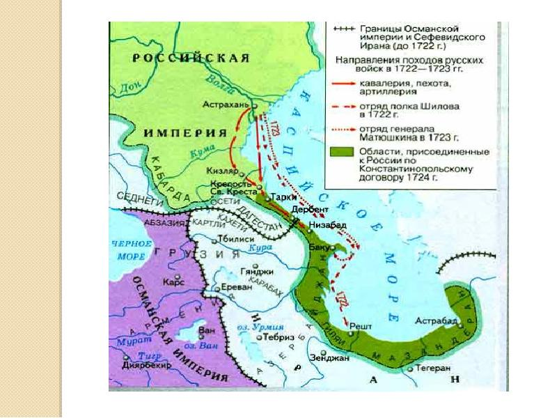

Каспийский поход (Персидский поход, русско-персидская война)
Причина
Желая расширить влияние Российской империи на южном побережье Каспийского моря и восстановить торговый путь из Индии в Европу, Петр I решил начать войну с Персией под предлогом нападения на русских купцов.
Итог
Решительные победы во время рейдов по городам южного побережья Каспийского моря вынудили Персию подписать Петербургский мирный договор в 1723 году, согласно которому к России отошли Дербент, Баку, Решт, провинции Ширван, Гилян, Мазендеран и Астрабад.